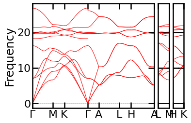
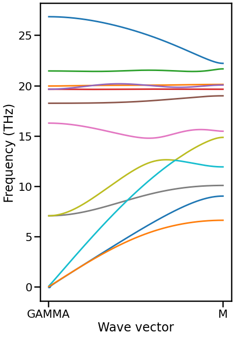
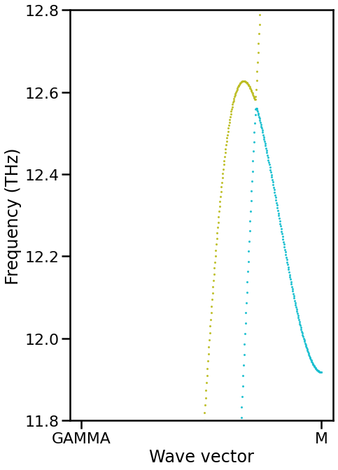

Sewing band structure by subduced representation¶
Load modules and prepare functions¶
[1]:
from __future__ import annotations
from pathlib import Path
import warnings
from itertools import product
from dataclasses import dataclass
import matplotlib.pyplot as plt
import seaborn as sns
import phonopy
import seekpath
import numpy as np
import networkx as nx
import spgrep_modulation
from spgrep.group import get_little_group
from spgrep.representation import get_character
from spgrep_modulation.modulation import Modulation
%matplotlib inline
print(f"spgrep_modulation=={spgrep_modulation.__version__}")
print(f"phonopy=={phonopy.__version__}")
spgrep_modulation==0.1.dev33+gc7ed76b.d20220823
phonopy==2.16.3
[2]:
sns.set_context("poster")
warnings.simplefilter("ignore")
[3]:
@dataclass
class BandNode:
"""Each point in band structure, characterized by eigenvalue and character of irrep."""
qpoint: NDArrayFloat
character: NDArrayComplex
eigenvalue: float
frequency: float
degeneracy: int
@dataclass
class QpointInfo:
"""Container for little co-group at qpoint."""
qpoint: NDArrayFloat
little_rotations: NDArrayInt
little_translations: NDArrayFloat
nodes: list[BandNode]
@classmethod
def from_modulation(cls, md: Modulation):
nodes = []
for eigenvalue, _, irrep in md.eigenspaces:
degeneracy = irrep.shape[1]
character = get_character(irrep)
nodes.append(
BandNode(
qpoint=md.qpoint,
character=character,
eigenvalue=eigenvalue,
frequency=md.eigvals_to_frequencies(eigenvalue),
degeneracy=degeneracy,
)
)
return cls(
qpoint=md.qpoint,
little_rotations=md.little_rotations,
little_translations=md.little_translations,
nodes=nodes,
)
def enumerate_non_overlapped_paths(
adj_: dict[Any, list[Any]], source: Any, destination: Any
) -> list[list[Any]]:
adj = adj_.copy()
all_paths = []
while len(adj[source]) > 0:
path = []
head = source
while (head != destination) and (len(adj[head]) > 0):
path.append(head)
head = adj[head].pop()
all_paths.append(path[1:]) # Ignore source
return all_paths
def _saw_consecutive(
qpoint_info1: QpointInfo,
qpoint_info2: QpointInfo,
num_atoms: int,
decimals=3,
) -> list[tuple[int, int]]:
"""Connect nodes in consecutive qpoints.
Assume little group of `qpoint_info1` includes little group of `qpoint_info2`.
Parameters
----------
qpoint_info1: QpointInfo
qpoint_info2: QpointInfo
Returns
-------
connections:
Let `connections[i] = (n1, n2)`. `qpoint_info1.nodes[n1]` and `qpoint_info2.nodes[n2]` are connected.
"""
graph = nx.DiGraph()
num_nodes1 = len(qpoint_info1.nodes)
num_nodes2 = len(qpoint_info2.nodes)
graph.add_nodes_from(range(num_nodes1))
graph.add_nodes_from(range(num_nodes1, num_nodes1 + num_nodes2))
# Retrieve subgroup of little co-group at qpoint-1 preserving qpoint2
_, _, mapping = get_little_group(
rotations=qpoint_info1.little_rotations,
translations=qpoint_info1.little_translations,
kpoint=qpoint_info2.qpoint,
)
for idx1, node1 in enumerate(qpoint_info1.nodes):
subduced_character1 = node1.character[mapping]
for offset, node2 in enumerate(qpoint_info2.nodes):
idx2 = num_nodes1 + offset
count = np.sum(np.conj(subduced_character1) * node2.character) / len(mapping)
count = np.around(np.real(count)).astype(int)
if count >= 1:
# Work around to stop min-cost-flow algorithm
weight = abs(node1.eigenvalue - node2.eigenvalue)
weight = int(weight * (10**decimals))
capacity = min([node1.degeneracy, node2.degeneracy, count])
graph.add_edge(idx1, idx2, weight=weight, capacity=capacity)
# Add source and destination to solve as min-cost flow
source = num_nodes1 + num_nodes2
destination = source + 1
demand = 3 * num_atoms # Number of branches
graph.add_node(source, demand=-demand)
graph.add_node(destination, demand=demand)
for idx1, node1 in enumerate(qpoint_info1.nodes):
graph.add_edge(source, idx1, weight=0, capacity=node1.degeneracy)
for offset, node2 in enumerate(qpoint_info2.nodes):
idx2 = num_nodes1 + offset
graph.add_edge(idx2, destination, weight=0, capacity=node2.degeneracy)
assert sum([node.degeneracy for node in qpoint_info1.nodes]) == demand
assert sum([node.degeneracy for node in qpoint_info2.nodes]) == demand
flowdict = nx.min_cost_flow(graph)
# Recover matching
active_edges = {}
for src, dst_flow in flowdict.items():
for dst, flow in dst_flow.items():
if src in active_edges:
active_edges[src].extend([dst for _ in range(flow)])
else:
active_edges[src] = [dst for _ in range(flow)]
all_paths = enumerate_non_overlapped_paths(active_edges, source, destination)
connections = []
for idx1, idx2 in all_paths:
connections.append((idx1, idx2 - num_nodes1))
return connections
def sew_bands(
ph: phonopy.Phonopy,
start: list[float],
stop: list[float],
num: int = 17,
):
"""Connect bands between qpoints `start` and `stop`.
Returns
-------
list_qpoint_info: list[QpointInfo]
connections: list[list[tuple[int, int]]]
list with length = 3 * len(ph.primitive)
connections[k] is the k-th band composed of list of tuples `(i, idx)` corresponding to `list_qpoint_info[i].nodes[idx]`
ratios: array with shape (num, )
"""
if num <= 2:
raise ValueError("Specify more than three points for `num`.")
list_qpoint_info = []
ratios = np.linspace(0, 1, num=num, endpoint=True)
for ratio in ratios:
qpoint = np.array(start) * (1 - ratio) + np.array(stop) * ratio
md = Modulation.with_supercell_and_symmetry_search(
dynamical_matrix=ph.dynamical_matrix,
supercell_matrix=[1, 1, 1], # No need to care about being commensurate here
qpoint=qpoint,
factor=ph.unit_conversion_factor,
)
info = QpointInfo.from_modulation(md)
list_qpoint_info.append(info)
# Connect between consecutive qpoints
all_paths = []
num_atoms = len(ph.primitive)
for i in range(num - 2):
for n1, n2 in _saw_consecutive(list_qpoint_info[i], list_qpoint_info[i + 1], num_atoms):
all_paths.append(((i, n1), (i + 1, n2)))
for n2, n1 in _saw_consecutive(list_qpoint_info[-1], list_qpoint_info[-2], num_atoms):
# Reverse the last path
all_paths.append(((num - 2, n1), (num - 1, n2)))
adj = {}
for i, info in enumerate(list_qpoint_info):
for idx in range(len(info.nodes)):
adj[(i, idx)] = []
for src, dst in all_paths:
adj[src].append(dst)
# Add dummy source and destination nodes
source = "source"
destination = "destination"
adj[source] = []
adj[destination] = []
for idx, node in enumerate(list_qpoint_info[0].nodes):
adj[source].extend([(0, idx) for _ in range(node.degeneracy)])
for idx, node in enumerate(list_qpoint_info[-1].nodes):
adj[(num - 1, idx)].extend([destination for _ in range(node.degeneracy)])
connections = enumerate_non_overlapped_paths(adj, source, destination)
return list_qpoint_info, connections, ratios
Prepare Phonopy object¶
[4]:
path = Path().resolve().parent.parent / "tests" / "phonopy_mp-661.yaml.xz"
ph = phonopy.load(path)
ph.auto_band_structure(plot=True).show()

Sewing¶
[5]:
band_path = seekpath.get_path(ph.primitive.totuple())
label1, label2 = band_path["path"][0]
list_qpoints_info, connections, ratios = sew_bands(
ph, band_path["point_coords"][label1], band_path["point_coords"][label2], num=512
)
Plot band structure with connection¶
Yellow and light blue branches seem to be mis-identified. They have the equivalent irreps between Gamma and M points. Thus, there is no way to distinguish them only from symmetry.
[6]:
fig, ax = plt.subplots(figsize=(6.75, 6.75 * 1.6))
for i, (connection, ratio) in enumerate(zip(connections, ratios)):
color = f"C{i}"
frequencies = [
list_qpoints_info[qpoint_idx].nodes[band_idx].frequency
for (qpoint_idx, band_idx) in connection
]
ax.plot(ratios[1:], frequencies[1:], color=color)
ax.set_xlabel("Wave vector")
ax.set_ylabel("Frequency (THz)")
ax.set_xticks([0, 1])
ax.set_xticklabels([label1, label2])
[6]:
[Text(0, 0, 'GAMMA'), Text(1, 0, 'M')]

[8]:
fig, ax = plt.subplots(figsize=(6.75, 6.75 * 1.6))
for i, (connection, ratio) in enumerate(zip(connections, ratios)):
color = f"C{i}"
frequencies = [
list_qpoints_info[qpoint_idx].nodes[band_idx].frequency
for (qpoint_idx, band_idx) in connection
]
# ax.plot(ratios[1:], frequencies[1:], color=color)
ax.scatter(ratios[1:], frequencies[1:], color=color, s=1)
ax.set_xlabel("Wave vector")
ax.set_ylabel("Frequency (THz)")
ax.set_xticks([0, 1])
ax.set_ylim(11.8, 12.8)
ax.set_xticklabels([label1, label2])
[8]:
[Text(0, 0, 'GAMMA'), Text(1, 0, 'M')]

[ ]: